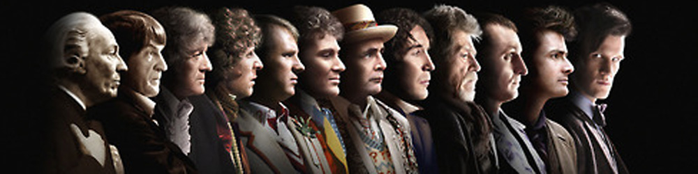
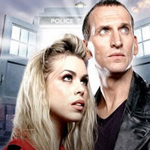

|  |
2005 RevivalIn addition, several planned films were proposed, including a sequel, The Chase, loosely based on the original series story, for the Cushing Doctor, plus many attempted television movie and big screen productions to revive the original Doctor Who, after the original series was cancelled. Paul McGann starred in the only television film as the eighth incarnation of the Doctor. After the film, he continued the role in audio books and was confirmed as the eighth incarnation through flashback footage and a mini episode in the 2005 revival, effectively linking the two series and the television movie. In 2011, David Yates announced that he had started work with the BBC on a Doctor Who film, a project that would take three or more years to complete. Yates indicated that the film would take a different approach to Doctor Who,[132] although the current Doctor Who showrunner Steven Moffat stated later that any such film would not be a reboot of the series and a film should be made by the BBC team and star the current TV Doctor.[133][134] |
|
Julia Schwartz Ann Marie Skjold |
Content derived from the Doctor Who Wikipedia |